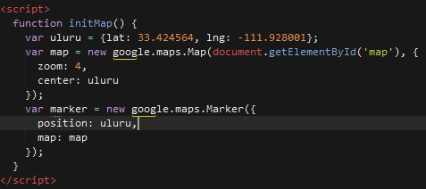

What is Web Development?

As mentioned above, the main technology used for front end development is some variation of HTML. The backend of website development is when things get interesting. In a post found online here the author provides a list of the top 15 back end programming languages. He also speaks more about the benefits of each one, if you are interested.
|
An example of the use of JavaScript can be seen right here on this webpage. With plain HTML, there is no way to place a map from google onto your website. But with JavaScript, this process is extremly simple. Here is all the code necessary to bring in a google map onto your website, this shows just how powerful and important programming is in the field of web development.  |